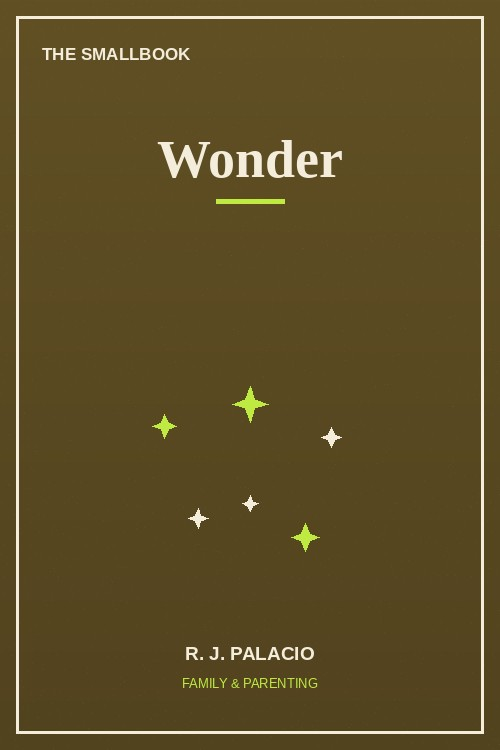

Library › Authors › R. J. Palacio
Books by R. J. Palacio
R. J. Palacio has one book in the library. Every book here is read down to the big idea, the lessons, the lines worth keeping and the actions worth taking. Start with the summary, then buy the full book if it earns a place on your shelf.

Wonder
2012 · 8 min · 8 lessons
Auggie Pullman was born with a face that makes children scream. Wonder follows his first year at school, and teaches the only curriculum that matters there: when given the choice between being right and being kind, choose kind.
R. J. Palacio's novel tells Auggie's story through many voices: his own, his sister Olivia's, his friends', even the bully's. August Pullman, born with severe facial differences and homeschooled until ten, enters fifth grade at Beecher Prep. The book's engine is not pity but moral education: every character is given a moment where kindness costs something, and the reader watches who pays. Its precept, choose kind, has entered real classrooms worldwide.
Lessons in the summary
- Choose Kind, Especially When Right Is Available
- Everyone Is Fighting a Battle You Cannot See
- Bullying Is a Group Activity, and So Is Stopping It
- Precepts Are Monthly Software for Character
- Auggie's Humour Is Armour He Chooses to Share
- Parents Are Characters Too, With Their Own Chapters
- The Ending Refuses the Trophy and Keeps the Point
- The Precepts Deserve a Reader's Own September
Lines worth keeping
- When given the choice between being right or being kind, choose kind.
- Courage. Kindness. Friendship. Character. These are the qualities that define us as human beings.
- Your deeds are your monuments.
Questions R. J. Palacio helps answer
Read nearby authors next
- Abraham Verghese 1 book
- Adele Faber and Elaine Mazlish 1 book
- Becky Kennedy 1 book
- Daniel J. Siegel and Tina Payne Bryson 1 book
- Marcus Webb 1 book
- Pamela Paul and Maria Russo 1 book